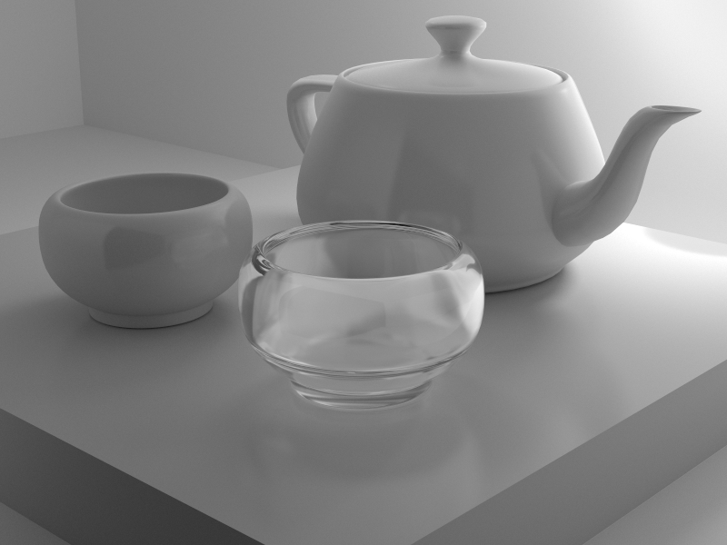
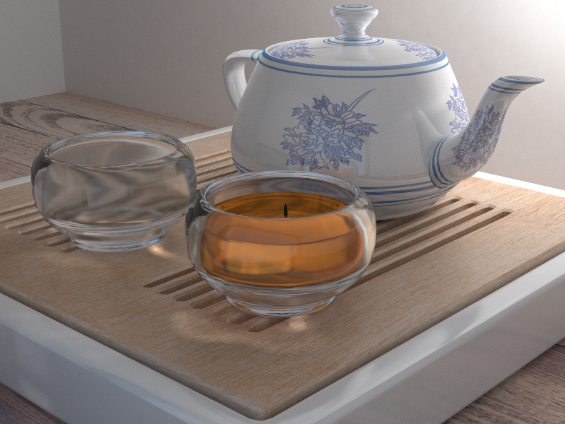

Resolution: 1080*810 Sample Per-pxel: 1024 GI Bounce count: 5 Photons: 1M Estimation Radius: 0.5 Time: 13hrs

Caustic Photon Map
Photons: 1M

Other Results
White model
Resolution: 800*600 Sample Per-pxel: 4096 GI Bounce count: 4 Time: 8hrs
With tea leaf inside the water
Sample Per-pxel: 1024 GI Bounce count: 4 Time: 8hrs
